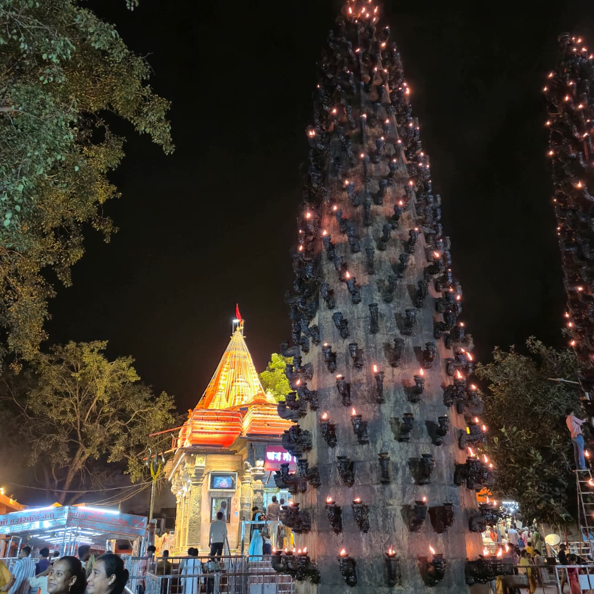

Wikimedia Commons · CC BY 4.0 ⇗
Sthala Puranam
Ujjain, the ancient Avanti on the banks of the Shipra, holds the Shakti Peetha of Mahakali at the Harsiddhi temple. The seat is counted among the Ashtadasha Shakti Peethas, associated with the upper lip of Sati.
Explanation
The Harsiddhi temple stands close to the great Mahakaleshwar shrine, and Ujjain is one of the rare places where both a Jyotirlinga and a Shakti Peetha live within one city. The Goddess is worshipped here as Mahakali, the consort of Mahakala — Shiva as the Lord of Time. A Sri Yantra formed of burning lamps in the sanctum reminds the devotee that the Goddess is the power behind time itself. Adi Shankara is remembered to have celebrated this seat in his saundarya lahari tradition.
Why the temple is revered
The Mahakali of Ujjain is revered as the power of annihilation that dissolves every obstacle and fear. Pilgrims to the Jyotirlinga of Mahakaleshwar make certain to bow to this Devi first, since she is the Shakti through whom the Lord beyond time acts. The city thus offers both forms of the divine in a single darshan.
🕉 Story
Ujjain is one of India's great sacred cities. The Mahakali tradition is associated with the city's ancient Shaiva and Shakta heritage.
✨ Significance
The temple stands within one of India's most important pilgrimage landscapes.